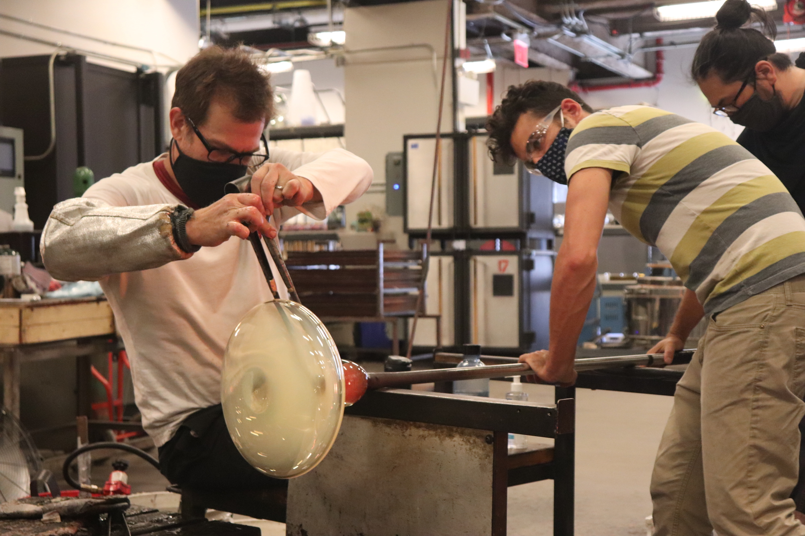
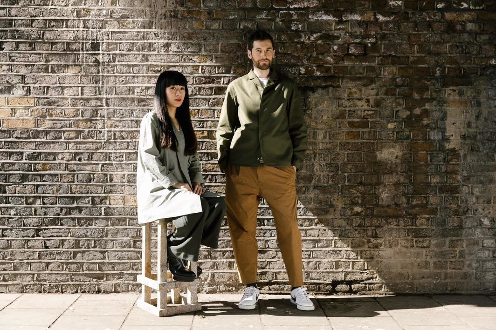
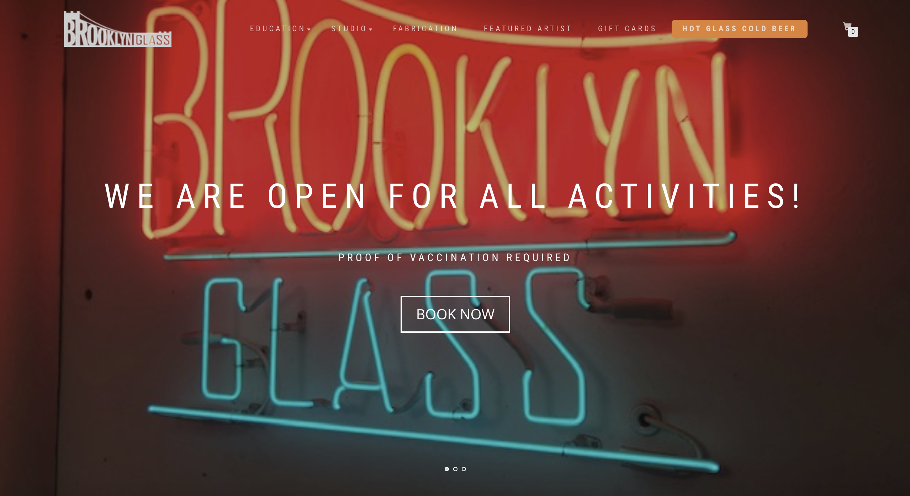

Research
What did we find when researching UrbanGlass?
When I first started with research on the organization called UrbanGlass, I first started with researching the programs that they provide. The first one that I came across the school partnership with Greene Hill that has been collaborated since 2015. This after-school program is for middle schoolers are designed to build skills from one year and to the next by focusing on mosaics, stained glass, flameworking, and glassblowing.
The next program that I came across when researching is called Teens Take The Met (TTTM) which is a biannual event that is hosted by the Met. The Met invites cultural institutions to create engaging hands-on activities and performances for ages 13-19. So UrbanGlass has been partnered with TTTM since 2017 by providing glass art making activities.
I went away from programs and focused on scholarships and that I where I found the Bead Project. The Chelicca Bead Project is a scholarship program was designed for the creatively inclined women, and over the course of ten classes, the students learn the art of beadmaking. This project is able to offer students a brand new experience that is transformative.
Turning back to community programs, I found the FGPC which is also known as the Fort Greene Park Conservancy. I was able to find out that UrbanGlass have been distributing free art activity kits which focuses on upcycling and the sustainability to the community neighbors which is able to inpsire a deeper consideration for the beauty of nature including the park.
Afterwards I was able to find that UrbanGlass is included in pop-up markets, festivals, and fairs which helps the connection with local communities and is able to share the magic of glass.
Lastly, in my research I come across the all all-ages programs which offers students of any ages the opportunity to explore the limitless possibilities of glass.
Secondary Research
What did we find when digging a little deeper?
The most recent innovation for this organization is on January 7th, 2022, UrbanGlass was awarded $10,000 by the New York State Council on the Arts (NYSCA). This awarded 10,000 from the NYSCA Recovery Fund to the organization UrbanGlass will be utilized to ensure safety and further COVID-19 protocol within the organization’s studios, offices, and gallery spaces. So in the coming year of 2022, it will continue to bring change and UrbanGlass will play a vital role in the renewal of New York’s economy and creative ecosystem. "The arts have long been a critical sector in our economy, and as we continue to rebuild a stronger New York, it's essential we do all we can to help this industry thrive once again," shared New York State Governor Kathy Hochul. "These awardees represent the best of what New York's vibrant communities have to offer and with this funding in hand, they will be able to not only continue their creative and inspiring work but help spur revitalization in their own backyard as well."
Quote from UrbanGlass Executive Director
“We are honored to receive this generous gift from the State of New York,” shared UrbanGlass Executive Director Devin Mathis. “Our organization plans to use these funds to fuel our COVID-19 recovery efforts, creating the safest environment possible for our artists, staff, and educators so they can continue to practice, create and innovate within the medium.”
Another recent innovation is the press coverage on June 24, 2019, on the widespread of the ceramics craze that built steadily to its saturation point. This is another artisanal movement that has been swiftly gaining traction which of course is glassmaking. A surge of young glassblowers inspired by the studio-glass movement of the 60s is creating loopy glass straws and warped vessels that have found their way into hyper curated homewares shops far and wide. From this online magazine, they include the top three glassblowing studios in the New York area which include UrbanGlass. The other two that are stated after The Biggest (UrbanGlass) are The Most Specific (Brooklyn Glass) and The One With a Water View (Scanlan Glass).
The third recent innovation in UrbanGlass’s particular area is the award that was given to a visiting artist and designer fellowships on April 4th, 2019. It was announced a few years back by the UrbanGlass organization that Dean Erdmann, Carly Mandel, and Tiffany Jaeyeon Shin will receive Visiting Artist Fellowships and Azusa Murakami and Alexander Groves of Studio Swine have been selected for its Visiting Designer Fellowships. The organization’s fellowship program was designed to provide artists and designers with the time, resources, and support they need to explore new ways to incorporate glass into their practices. The recipients were chosen based on their past work and proposals for new projects in glass by a three-member jury.
“UrbanGlass offers educational programs to around twelve thousand people each year, and over four hundred artists use its facility as their primary studio.”Take a look at other solutions in your area. Which ones worked? Which ones didn’t? Are there any that feel similar to what you might design? Any solutions that have inspired you to make one of your own?
I first went to the top three glassblowing organizations in the New York area which were Brooklyn Glass and Scanlan Glass. First I went to the Brooklyn Website and found that this layout worked for the organization. They were able to have enough information on the main page without it feeling like it was chaotic but also not bare. This color scheme was very neutral with whites and blacks so it doesn’t distract from the work and pictures. The neutral color scheme of black and white is what feels similar to what I might design so the focus is on the photos and work that will be displayed on the website. The solution that contains the jumbotron of the multiple pictures and the lack of chaotic information on the main page has inspired me to be able to create categories on the main page so that it can transfer viewers to a different page for the information without the big amount of text on the main page.
 The
second site I went to was the Scanlan website and I immediately could tell that this website would not
work. There is a sense of lacking and bare even with the navbar on the website. The site also has
clashing colors with black, blue, white, and green which is a bit distracting. The pictures that are on
the main page don’t match up in height and width so they feel misplaced and seem like they don’t belong
there.
The
second site I went to was the Scanlan website and I immediately could tell that this website would not
work. There is a sense of lacking and bare even with the navbar on the website. The site also has
clashing colors with black, blue, white, and green which is a bit distracting. The pictures that are on
the main page don’t match up in height and width so they feel misplaced and seem like they don’t belong
there.
UrbanGlass Prices
"Glass blowing must be booked in a MINIMUM of three-hour increments, with additional one-hour slot increments, unless you are booking before or after another person's blowing slot. There are no scheduled lunch breaks. If you book 7 straight hours or more on the same glory hole, you will be given a lunch credit equalling 6% of the rental cost."
Brooklyn Glass Prices
"ALL GLASSBLOWING RENTALS INCLUDE THE FOLLOWING: garage, pipe warmer, pipe cooler, studio blocks, studio pipes, studio loading gear (kevlar gloves and face shield). Glass is supplied by Brooklyn Glass at 10lbs per working hour per rental."

It used to be difficult to color recycled glass, but thanks to a tiny innovation, it is now possible to include colors into the production of new glass from reclaimed raw materials. Ramnäs Glashytta is at the forefront of this development. Ramnäs Glashytta reduces its carbon footprint by powering its ovens with renewable energy rather than fossil fuels. Ramnäs Glashytta uses recycled soda glass as its raw material, which is a blend of quartz sand, limestone, and soda ash that includes fewer chemicals than regular crystal glass.